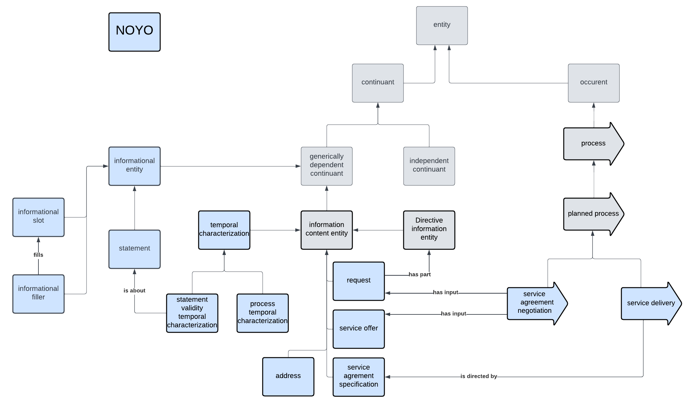

NOYO Ontology Documentation
Welcome to the NOYO documentation!
You can find descriptions of the standard ontology engineering workflows here.
NOYO schema

Classes
| IRI | value | def |
|---|---|---|
| NOYO_0000001 | request | An information content entity representing the will of a person to have something done and specifications for the latter. |
| NOYO_0000002 | service offer | An information content entity describing the processes a person or an organization is willing to perform, usually for a compensation. |
| NOYO_0000003 | service agreement specification | An information content entity that specifies a service agreement made between a request party and a service offer party. A service agreement specification can direct some processes that correspond to what has been agreed between the parties. |
| NOYO_0000005 | service agreement negotiation | A planned process of interaction between a request party and a service offer party having as specified input some request and some service offer and that aims to generate as output a service agreement. |
| NOYO_0000006 | service delivery | A planned process that aims at fulfilling the commitments of a service agreement. |
| NOYO_0000009 | temporal characterization | An information content entity that is about a one-dimension temporal region. |
| NOYO_0000010 | process temporal characterization | A temporal specification that is about the occupation of a temporal interval by some processes. |
| NOYO_0000011 | statement validity temporal characterization | A temporal characterization specifying a temporal region during which a statement is considered valid. |
| NOYO_0000012 | informational entity | A generically dependent continuant that is a building block of information or a combination thereof. |
| NOYO_0000013 | statement | An informational entity that is considered valid by some agent at some point in time. (TBD) |
| NOYO_0000014 | informational slot | An informational entity that can be filled by an informational filler. |
| NOYO_0000015 | informational filler | An informational entity that fills an informational slot. |
| NOYO_0000018 | canadian postal code | A postal code information that is about some geographical region in Canada. |
| NOYO_0000019 | canadian forward sorting area code | An identifier that denotes a geographical region on which is based the first three characters of a Canadian postal code. |
| NOYO_0000020 | postal address city | An identifier that denotes a city as part of a postal address. |
| NOYO_0000021 | postal address country | An identifier that denotes a country is part of a postal address. |
| NOYO_0000022 | canadian first-order administrative region identifier | An identifier that denotes a Canadian province or a Canadian territory. |
| NOYO_0000023 | canadian census subdivision identifier | An identifier that denotes a municipality (as determined by provincial/territorial legislation) or an area treated as a municipal equivalent for statistical purposes (e.g., Indian reserves, Indian settlements and unorganized territories). |
| NOYO_0000024 | human identifier | An identifier that denotes a particular homo sapiens. |
| NOYO_0000025 | canadian postal address | A postal address that can be used to help the delivery of something in Canada. |
| NOYO_0000049 | state sanctioned statement | A statement whom agent considering it true is a state. |
| NOYO_0000050 | birth statement | A statement about the information surrounding the birth of a human. |
| NOYO_0000051 | death statement | A statement about the information surrounding the death of a human. |
| NOYO_0000052 | civil birth record | A state sanctioned statement about the information surrounding the birth of a human. |
| NOYO_0000053 | civil death record | A state sanctioned statement about the information surrounding the death of a human. |
| NOYO_0000065 | statement validity beginning characterization | |
| NOYO_0000066 | statement validity ending characterization | |
| NOYO_0000070 | human birth date | A process temporal specification that is about the birth date of an homo sapiens. |
| NOYO_0000071 | human death date | A process temporal specification that is about the date of death of an homo sapiens. |
| NOYO_0000072 | human biological sex information content entity | An information content entity that denotes the biological sex of a human. |
| NOYO_0000073 | biological sex or gender identity information content entity | An information content entity that is intended to denote a biological sex or a gender identity. |
Properties
| IRI | value | def |
|---|---|---|
| NOYO_0000007 | directs | |
| NOYO_0000008 | is directed by | |
| NOYO_0000016 | fills | |
| NOYO_0000030 | characterizes | A characterizes B means that A is about a main feature or quality of B. |
| NOYO_0000031 | is characterized by | |
| NOYO_0000032 | temporally characterizes | A temporally characterizes B means that A is about a maintemporal feature or quality of B. |
| NOYO_0000033 | is temporally characterized by |